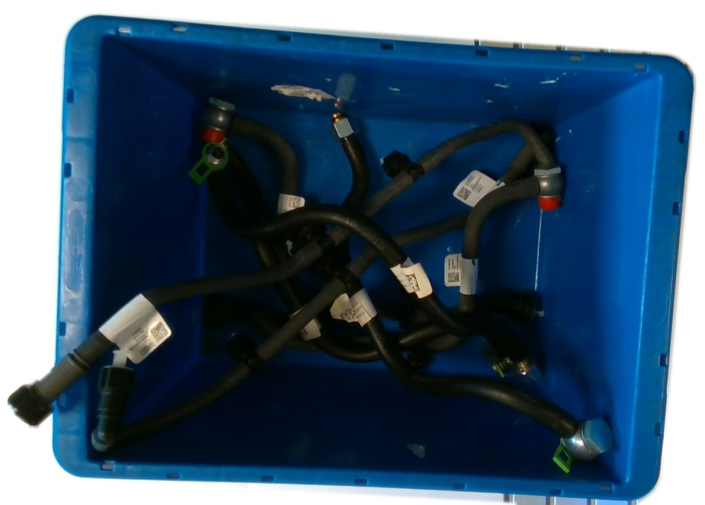
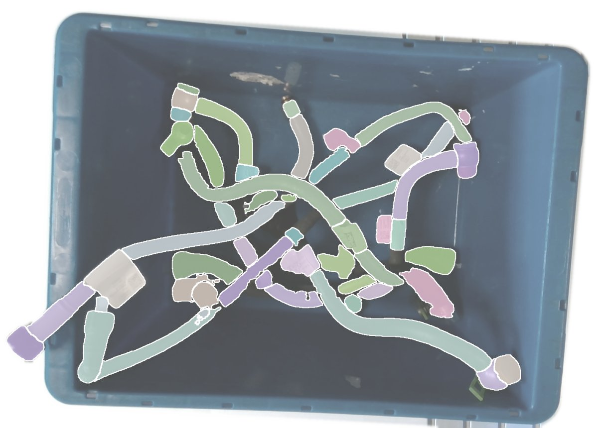
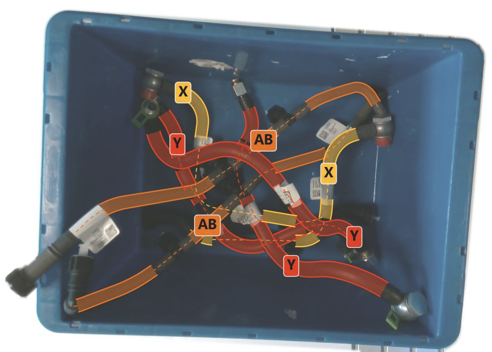
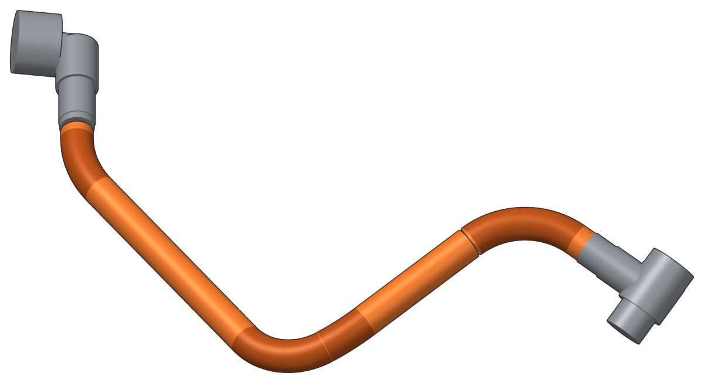

How a robot learns to see tangled tubes
A camera on a robot arm looks into a bin of mixed tubes. pipeFit works out which tube is which, its exact shape and where it lies, so the robot can pick it up.
Save the poster to your phone Why not just use CAD or keypoints? ↓
The robot moves its camera around the bin and takes colour and depth pictures from several sides.

An AI image tool outlines every piece of tube it can see. It does not know the shapes yet.

Each tube's recipe is tuned until it matches every picture. Its type (AB, X or Y) comes out too.
Every tube's shape and position, ready for safe motion planning. After each pick the robot looks again. Turn it yourself at the top of the page.
A tube is a recipe, not a cloud of dots

We do not store a tube as millions of 3‑D points. We describe it with a short recipe of straight pieces, bends and turns: 12 to 24 numbers per tube, plus where it lies. The computer tunes these numbers until the drawn tube matches what the camera sees.
Recipe of a real type-X tube from our lab bin.
Unlike a cloud of dots, the recipe carries on under other tubes, so the whole tube is known even when half of it is covered.
A few numbers cannot follow every speck of noise, so random depth errors average out along the tube; offsets that a whole view shares are modelled, not averaged.
Each recipe belongs to a tube type. In our real-bin tests: 0 type mix-ups.
Bendy tubes never match their drawing exactly, so our recipes come from scans of real tubes. Small corrections to the bends let the fit follow each piece more closely.
Every number comes with an error bar computed from the camera's measured noise, so the robot can skip a pick it is unsure about. On real bins the bars are still a little optimistic.
An exact shape gives safe paths around the other tubes, grasp points and the centre of gravity.
Why not just match the CAD model, or use keypoints?
Needs an exact drawing of every tube. The shape stays fixed; only its position is found.
Our tubes: the drawings we have do not match the real tubes, and two of our three tube types have no drawing at all. Bendy tubes also differ from piece to piece. In a test, the fixed model of one tube rejected a real tube of the same type.
Needs corners or texture that can be found again in every view.
Our tubes are black and round. Many of the keypoints a detector finds on them sit on shiny highlights that move with the viewpoint, so only a few can be matched from one view to the next, far fewer than on the fittings and labels. A straight stretch also looks the same all along and all around, so a short piece fits in many places. We did not build on keypoints for these reasons.
A tube is written as straight pieces, bends and turns, so bending the tube just means changing a few of these numbers. The deformation is part of the model, not an error.
The fit finds where each tube lies and how its bends have changed, using all views at once. Recipes start from scans of real tubes, not from drawings. For our stiffest type, a fixed shape works just as well.
Both assume one fixed shape and only find where it lies. Methods that do allow bending either give every point its own displacement, learn a shape model from many examples, or, like pipeFit, let a few meaningful numbers change: here the recipe's straight lengths, bend angles and turns.
From a few visible pieces to the whole tube
The camera only ever sees pieces of a tube. This interactive demo, simplified to a flat world with made-up data, shows how the recipe is fitted: slide a piece along the recipe to collect candidates, check each candidate against the other pieces, refine the survivors with the Levenberg–Marquardt method, and finally refine crossing tubes together.
Open the demo on its own page (more room on a computer).
How pipeFit decides what to trust
We measured how the camera errs: how far off it is, how noisy, and over what distance its errors move together. This one model is used all along the way.
One scale for all the evidence
Data and prior knowledge balance themselves
The same error is not counted twice
Results come with error bars
Choosing between explanations
Knowing where to look next
Spotting outliers
The model can check itself
Sees colours and edges: where one tube ends and the next begins.
Two infrared cameras and a dot projector measure the distance to every pixel. Black and shiny tubes make it noisy, so we model the noise instead of trusting every pixel.
Angle sensors in the arm's 7 joints tell where the camera was for each picture, so all views fit together.
Real lab tests against a printed target. Hardware: Intel RealSense D435 on a Franka Panda arm.
From the 3‑D copy to a safe pick
Each tube's points, the parts hidden under other tubes, its centre of gravity and which tube lies on top.
Proposes many gripper poses on these points and gives each one a score.
The arm takes a tube that is free on top, on a path clear of the bin and the other tubes. Then it looks again.
SENSORSThe wrist depth camera, through the 3‑D copy, and the gripper's finger-width reading.
Grasp point from the 3‑D copy. The tube was held at the first try and lifted out of the bin without slipping.
Both of our robot arm systems speak the same language: one set of commands to move the arm, read where it is, take pictures and update its 3‑D scene. Everything built on top is shared.
Franka Panda arm, Intel RealSense D435 camera.
Universal Robots UR10e arm, OnRobot RG6 gripper.
A software stand-in that answers like a real arm.
The same pipeFit software drives either arm. There is no second version to keep in step.
The 3‑D copy and the grasp choice reach the robot through the same commands, so the two parts combine directly.
A simulated robot speaks the same API, so new software is checked on a computer before it moves a real arm.
Calibration, the 3‑D safety scene and path checks work the same way on both arms, so their results can be compared.
A new arm only has to speak the API. The seeing, calibration and planning on top stay the same.
How we will make pipeFit faster
Most of the time goes into fitting the tube recipes and into the AI segmentation.
The AI segmentation models stay loaded between scans instead of starting again for every scan; the masks are the same.
Faster inner calculations in the fitting step; the same tubes are found on our reference scenes.
Process the views in parallel: each view is handled on its own until the views are combined, so several processor cores can work at the same time.
Several GPU threads: segment several views at once, and later move the heaviest parts of the fit, such as rendering and residuals, to the GPU.
Run independent steps side by side: for example, one AI model starts while the bin is still being located.
Cache intermediate results: reuse what did not change, such as the segmentation of an unchanged view; the cache is keyed by the input, so the result stays the same.
Update instead of rebuild: after a pick, start from the last 3‑D copy and re-check only what changed; the full search runs only when something new appears.
Fixed cameras: several cameras around the bin take all views at once. The arm no longer moves to look, the camera positions are calibrated once, and the arm can pick while the cameras look.
Every speed-up must keep the results the same: we check each one against our reference scenes before it goes in.
Built in our multi-agent research environment
All of this work runs in our multi-agent research environment for plug & produce. Robot arms, cameras and software parts talk through shared interfaces, so new hardware can be plugged in and put to work without rewriting the software on top.
One set of commands to move the arm, read where it is and check a path first. The Franka Panda, the UR10e and a simulated robot all answer the same commands.
One set of commands to take colour and depth pictures and to set the camera mode, so the software above does not depend on one particular camera.
Seeing the tubes, calibration, safe motion and grasping are built on these interfaces. Plug in another arm or camera that speaks them, and the same software works with it.
Take the poster with you: save both pages to your phone.


Saved images are high resolution (3840 × 2160). Tap a page to open it full size.